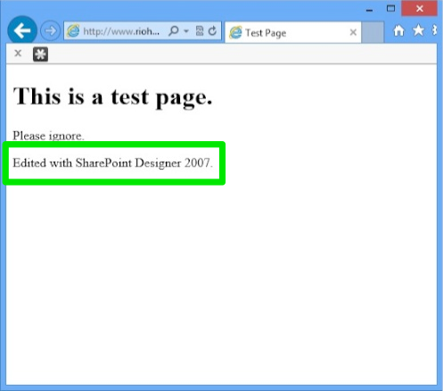

Rio Hondo College
Information Technology Services


Edit a Webpage with Microsoft Office SharePoint Designer 2007
We use Microsoft Office Sharepoint Designer 2007 to update campus webpages. If you are a responsible for updating webpages in your area we will provide this software for you. Please use the following tutorial to start updating the content of your pages.
Installation
ITS provides installation services for Microsoft SharePoint Designer 2007. If you do not have the software installed, please submit a help desk request and we will assist you as soon as possible.
Please make a backup of your documents prior to editing them. Changes go live on the website immediately.
Navigate to the Desired Page
On your windows machine, open Internet Explorer and navigate to the page that you plan to update.
We are going to edit this test page.
Edit with SharePoint Designer
Click on File >> Edit with Microsoft Office SharePoint Designer. If you do not see the File menu (as in the image above), click the Alt key on your keyboard
Click Allow when presented with a Windows Security popup.
Enter your Rio Hondo domain credentials in the Windows Security popup. These will probably be the credentials you use to log in to your computer.
Enter your username and password. Then click OK.
Edit in SharePoint Designer
SharePoint Designer will open on your computer and you will see the webpage in the middle. This will edit very similar to a Microsoft Word document. Double-click in the space that you would like to add or change content.
Enter the new or updated content. Please check for spelling errors and ensure that any links to other pages are correct.
Save your updates by clicking on the diskette icon in the menu bar or choosing File >> Save. The updates will be immediately available on the campus webserver.
Proofread the Changes
Switch to (or open) Internet Explorer and navigate to the page or pages that were updated. Please verify that you are seeing what you expect to see. If you would like to make further changes, please scroll back to the top of this page and follow the steps again.
